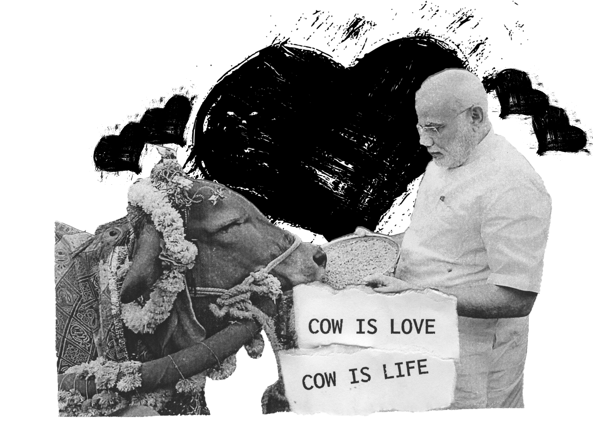
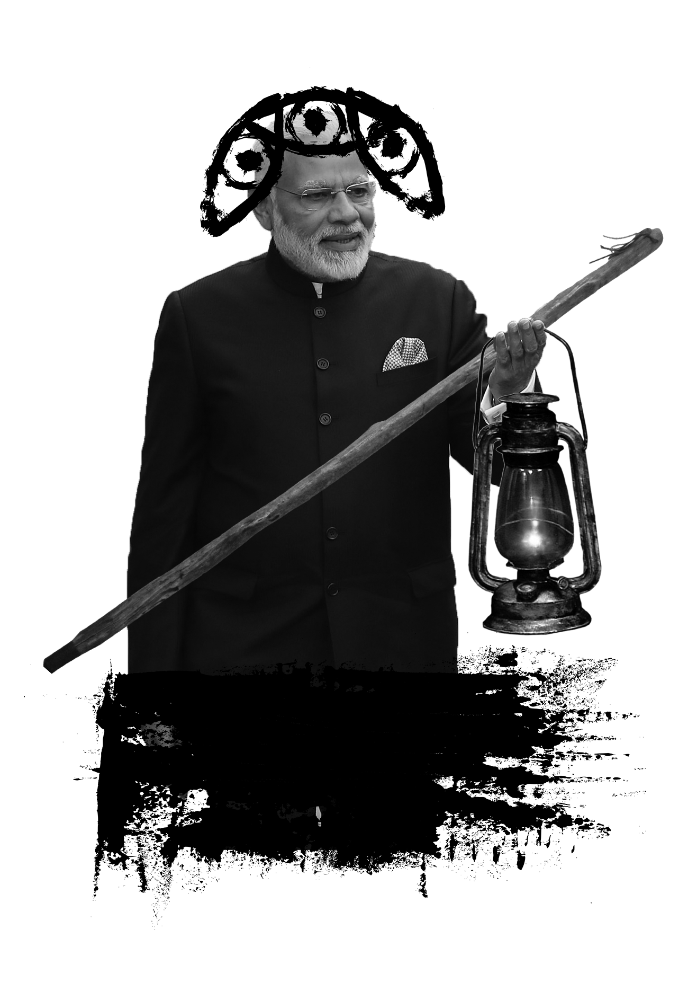

One of the world’s most ancient religions is a force in modern Indian politics. Hinduism, the avowed faith of Prime Minister Narendra Modi, forms the philosophical bedrock of his ruling Bharatiya Janata Party (BJP). It is also the religion of 80 percent of India’s nearly 1.3 billion people, making it the third-largest faith tradition globally, after Christianity and Islam. Of course, despite its overwhelming demographic presence, Hinduism never became India’s official religion. Instead, India, as outlined in its constitution, has remained an officially secular nation, home to a dizzying array of philosophies and interpretations, movements and sects, and significant communities of religious-minority Muslims, Christians and Sikhs. The architects of the secular and pluralistic concept of Indian nationhood that sought to embrace this diversity were Mahatma Gandhi> and Jawaharlal Nehru, India’s first prime minister. The Indian National Congress (INC) party that they led has generally followed, if not perfectly, the founders’ philosophy to this day.
However, in recent months a surging wave of Hindu nationalism has challenged this bedrock philosophy, touching off a raging national debate about the fundamental nature of India’s political identity. This so-called intolerance debate, which has pitted traditional pluralism against a more strident, conservative, religious-based conception of Indian nationhood, has counted among its controversies the February arrest of doctoral student Kanhaiya Kumar, a political activist, on charges of sedition. The arrest sparked nationwide protests, with activists accusing the BJP of undermining democracy and free speech by imposing a divisive and heavy-handed brand of right-wing Hindu nationalism.
According to its more hard-line proponents, Hinduism should supplant secularism as the guiding principle of Indian society. Taken to its extreme, this would entail the political and cultural subordination of the country’s Christian and Muslim populations. While this is unlikely to happen in the near term, even a partial implementation of this vision is cause for concern in a country whose history is punctuated by gruesome episodes of religious violence — often between its Hindu majority and Muslim minority. The intensifying clash between the philosophies and the resulting political ramifications will undermine Modi’s already languishing reform agenda and deepen the country’s political polarization.
Earlier this year, Mahua Moitra, of the opposition Trinamool Congress Party (TMC), said she had seen a list of the early warning signs of fascism on a poster in the Holocaust Memorial in the US. She read these points in Parliament to show that India’s constitution was under threat and the country was being “torn apart” by the ruling party’s “lust to divide”. She read seven of these points in the Lok Sabha, saying “India is being pushed to the Dark Ages”.

